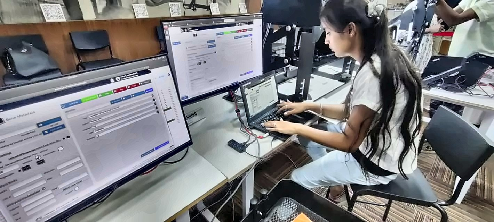

ಡಿಜಿಟಲೀಕರಣ
ಕಪಾಟಿನಿಂದ ಹುಡುಕಬಹುದಾದ ಪುಟದವರೆಗೆ ಒಂದು ಪುಸ್ತಕ ಹೇಗೆ ತಲುಪುತ್ತದೆ.


01
ಸ್ವೀಕಾರ ಮತ್ತು ಮೌಲ್ಯಮಾಪನ
ವಿಶಿಷ್ಟ ಐಡಿಯೊಂದಿಗೆ ದಾಖಲಿಸಲಾಗುತ್ತದೆ. ಏನನ್ನಾದರೂ ಮುಟ್ಟುವ ಮೊದಲು ದುರ್ಬಲ ವಸ್ತುಗಳನ್ನು ಗುರುತಿಸಲಾಗುತ್ತದೆ.
02
ಮೊದಲು ಮೆಟಾಡೇಟಾ
ಶೀರ್ಷಿಕೆ, ಲೇಖಕ, ಭಾಷೆ, ವಿಷಯ ಮತ್ತು ಸ್ಥಿತಿಯನ್ನು ದಾಖಲಿಸಲಾಗುತ್ತದೆ, ಹೀಗಾಗಿ ಆನ್ಲೈನ್ಗೆ ಬಂದ ಕ್ಷಣವೇ ಅದನ್ನು ಹುಡುಕಬಹುದು.
03
ಮುಕ್ತ ಯಂತ್ರಾಂಶದಲ್ಲಿ ಸ್ಕ್ಯಾನ್
ಮೇಲ್ಭಾಗದ ಎರಡು-ಕ್ಯಾಮೆರಾ ವ್ಯವಸ್ಥೆ ಎದುರೆದುರಿನ ಎರಡೂ ಪುಟಗಳನ್ನು ಒಮ್ಮೆಗೇ ಸೆರೆಹಿಡಿಯುತ್ತದೆ.
04
Repub ನೊಂದಿಗೆ ಒಸಿಆರ್
ಭಾರತೀಯ ಲಿಪಿಗಳನ್ನು ಯೂನಿಕೋಡ್ ಪಠ್ಯ, hOCR ಮತ್ತು ಹುಡುಕಬಹುದಾದ PDF ಆಗಿ ಓದಲಾಗುತ್ತದೆ.
05
ಗುಣಮಟ್ಟ ನಿಯಂತ್ರಣ
ಪ್ರತಿ ಚಿತ್ರವನ್ನೂ ಸ್ಪಷ್ಟತೆ, ಬೆಳಕು ಮತ್ತು ಪೂರ್ಣತೆಗಾಗಿ ಪರಿಶೀಲಿಸಲಾಗುತ್ತದೆ.
06
ಪ್ರಕಟಣೆ
ಸಾರ್ವಜನಿಕ ಡೊಮೇನ್ ಕೃತಿಗಳು Internet Archive ಗೆ; ಹಕ್ಕುಸ್ವಾಮ್ಯದ ಕೃತಿಗಳು ಕಾನೂನಿನ ಚೌಕಟ್ಟಿನಲ್ಲಿ.
15ಸ್ವಯಂ-ನಿರ್ಮಿತ ಸ್ಕ್ಯಾನರ್ಗಳು
5–10 ಸಾವಿರಪ್ರತಿ ಸ್ಕ್ಯಾನರ್ಗೆ ದಿನಕ್ಕೆ ಪುಟಗಳು
15 ಲಕ್ಷಪುಟಗಳು ತಿಂಗಳಿಗೆ, ಪೂರ್ಣ ಸಾಮರ್ಥ್ಯದಲ್ಲಿ
13 ಲಕ್ಷ+ಜೈ ಜ್ಞಾನ್ ನಲ್ಲಿರುವ ಕೃತಿಗಳು
20+ಭಾಷೆಗಳು, 60,000+ ಸಂಸ್ಕೃತ ಪುಸ್ತಕಗಳು ಸೇರಿ
ಯಾರು ಏನು ಓದಬಹುದುಸಾರ್ವಜನಿಕ ಡೊಮೇನ್ → ಆನ್ಲೈನ್ನಲ್ಲಿ ಮುಕ್ತಮುದ್ರಿತ ಪಠ್ಯ ಓದಲಾಗದವರು → ಬ್ರೈಲ್ ಮತ್ತು DAISYಹಕ್ಕುಸ್ವಾಮ್ಯ ಇರುವವು → ಒಡೆತನದ ಗ್ರಂಥಾಲಯದ ಮೂಲಕ
ಕೇಂದ್ರಗಳುಬೆಂಗಳೂರು · ಪ್ರಮುಖ ಕೇಂದ್ರಮೈಸೂರು · 18,000 ಪುಸ್ತಕಗಳು, 1,000 ಆರ್ಕೈವ್ಗಳು (ಒಡಂಬಡಿಕೆ, ಜುಲೈ 2026)